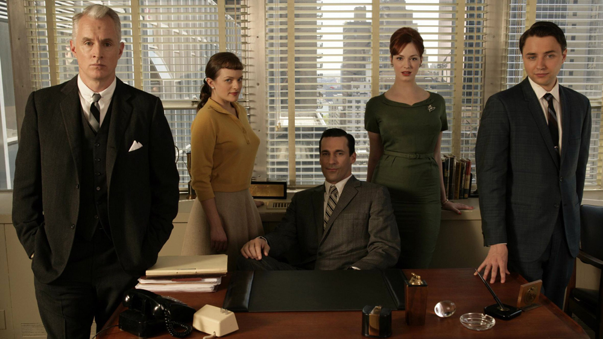

ABOUT
 The lives of the men and women who work in an advertising agency in New York in the 1960s. The agency is enjoying success, but the advertising game becomes more competitive as the industry develops. The agency must adapt to ensure its survival. focusing on one of the firm's most mysterious but extremely talented ad executives, Donald Draper. Mad Men is a kind of time machine, but it’s a complicated one. It doesn’t go in only one direction. You start watching and it takes you to the past—early 1960—when you can smoke in any restaurant and doctors are just starting to prescribe the Pill. It moves forward: the Kennedy-Nixon campaign, Camelot, the Moon landing. But it also transports you from there to Don’s childhood as Dick Whitman in the Depression. It flashes to the Korean War, when the aimless orphan seizes the chance to reinvent himself, Gatsby-like, by stealing the identity of a fallen comrade. It reminds us that the past has its own past. It moves, as Don says of the Carousel, “backwards and forwards.” When we first met Don Draper, back in 2007, which is to say, back in 1960, he was like a billboard for his own charisma. Handsome as a racecar, he clearly got a kick out of his own cinematic virility, using it to manipulate both men and women. Yet Don spent that day in a panic, struggling to devise an ad for Lucky Strike cigarettes. “I have nothing,” he kvetched to his mistress. “I am over. And they’re finally gonna know it. Next time you see me, there’ll be a bunch of young executives picking meat off my ribs.” His nerves were a kind of theatre, of course. Twenty-three minutes later, in the Sterling Cooper boardroom, Don pulled a perfect pitch out of thin air, the first of many resurrections. His colleague Pete wanted Lucky Strike to embrace death, but Don knew that a distraction was needed. “Everybody else’s tobacco is poisonous,” he explained to the client. “Lucky Strike’s is toasted.” As cable television’s latest bad boy, with all the sex and none of the violence of his predecessors, Draper was an immediate hit with audiences: the man who could read symbols but couldn’t be read himself—a mystery wrapped in an enigma wrapped in Jon Hamm. Reference: https://en.wikipedia.org/wiki/Mad_Men
Best Episodes of Mad Men
Guy Walks Into an Advertising Agency (season 3, episode 6) "Guy Walks Into An Advertising Agency" exemplifies how "Mad Men" was just as much of a comedy piece as it was a high drama. When the British advertising agency Putnam, Powell, and Lowe executives invades Sterling Cooper on the day of Joan's goodbye party, Ken and other employees start riding a John Deere riding mower — the Chekhov's gun of the episode. The ditzy secretary Lois hops on the machine and lacerates Guy MacKendrick's foot, his blood spraying all over the Sterling Cooper workers. The scene is shocking, gory, and darkly funny — unlike anything we've ever seen before in "Mad Men." "The story was inspired by, how could it be that these people were so drunk all the time at all these parties and nothing like this had ever happened?" Matthew Weiner told Uproxx in an oral history of the bloody scene. By toying with the horror and comedy genres, as well as capturing the time period's office camaraderie so well, this is one of the most memorable episodes in the series.
The Other Woman (season 5, episode 11) The ugliness of capitalism and objectification of women is laid bare in "The Other Woman." Joan trades a one-night stand with slimy Jaguar dealership owner Herb Rennet for a partnership. It's "business at a very high level," Pete insists, but as Roger knows that "This is some very dirty business." These men will never have to be in the position of having their bodies exploited for financial security. Writers Semi Chellas and Matthew Weiner toy with the audience's emotions by mixing up the scene's temporality. This builds to the crushing reveal that when Don tries to stop her, Joan has already gone through with it.
Person to Person (season 7, episode 14) There's a lot of pressure to nail the finale of a series, but "Person to Person," the 92nd and final episode of Matthew Weiner's incredible show, is a graceful culmination of Don Draper and the entire Sterling Cooper ensemble's journey. A moving montage shows Pete Campbell and wife Trudy settle in Wichita, Joan starts her own business, and Peggy and art director Stan Rizzo enter a romantic relationship. After abandoning his work and traveling to California, Don accompanies his niece Stephanie to a self-help retreat at the Esalen Institute. As the Mad Men ending explained article details, Don has an epiphany when he meets another man who knows how it feels to be disconnected from the world. Jon Hamm delivers a powerhouse performance, particularly during Don's gut-wrenching phone calls with the women in his life and his debilitating panic attack. "Mad Men" ends with Don sitting on the hilltop and smiling, accepting his own inner truths but also embracing the advertising man he is at his core. His meditative state inspires him to create the famous "I'd Like to Buy the World A Coke" advertisement. Through this song of hope and interpersonal relationships, Matthew Weiner ends his epic story on an uplifting note. The elegantly-crafted "Person to Person" is a satisfying conclusion that ties loose ends up nicely without being too neat. Our journey with Don Draper poignantly ends as it began: with Don Draper searching for inspiration for an ad. All of the characters move on to the next chapter of their lives in the 1970s. It's the perfect ending to one of the greatest television shows of all time.